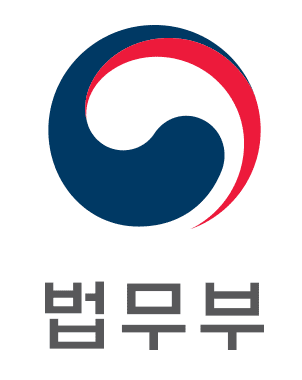

2019년 인공지능식별추적시스템 실증 및 검증 사업 모집 공고 |
과학기술정보통신부, 법무부 및 정보통신산업진흥원은 컴퓨터 비전 분야 선도적 기술 확보 및 AI 산업을 육성하고, 출입국 시스템을 세계적 수준으로 고도화하기 위해 「2019년 인공지능식별추적시스템 실증 및 검증」 사업을 공모하오니 많은 참여바랍니다.
2019. 5. 07.
정보통신산업진흥원장
1. 사업 목적
ㅇ 다수의 움직이는 사람의 신원을 자동으로 식별하고, 위험 상황을 실시간으로 탐지하는 인공지능 시스템 구축·실증·검증 지원 및 산업 육성
2. 지원 분야 : 자유공모
ㅇ (트랙1) 인공지능 식별·추적 시스템을 실증하고 학습데이터를 가공하여 제공
* 식별추적시스템 고도화 이후 법무부, NIPA 등 주관으로 성능평가 추진
ㅇ (트랙2) 정부출연금 없이 식별추적시스템을 구축하고 성능평가에 참여
ㅇ (트랙3) 성능 검증(평가) 지원을 위한 시험환경 구성 및 성능 검증 수행
3. 지원 대상
ㅇ [트랙1] 인공지능 식별추적 시스템 구축 및 실증 : 인공지능 알고리즘 보유 기업, 데이터수집 기업 혹은 관련기술 보유 비영리기관(컨소시엄 가능)
- 주관기관은 인공지능 식별추적 기술(알고리즘)을 보유하고 있는 중소·중견 기업 또는 창업기업으로 제한
* 그 외 기관(학교, 연구소, 등)은 참여기관으로 참여 가능(대기업 제외)
ㅇ [트랙2] 인공지능 식별추적 시스템 성능평가 참여 : 참여에 제약 없음
- 정부출연금 없이 자부담금으로만 식별추적 시스템을 구축하여 성능평가에 참여할 기관
- 안면인식 혹은 이상행동패턴 실증 과업중 하나만 선택하여도 참여 가능
* 시스템을 구축·고도화하여 성능평가에 참여하는 것만 과업 범위에 해당함
* 정부출연금 사용불가, 자부담금만으로 사업 진행
ㅇ [트랙3] 인공지능 식별추적 시스템 성능 검증(평가) 지원
- 안면인식, 이상행동패턴 시스템 실증에 참여하는 트랙1, 2 기업을 대상으로 공정하고 공신력 있게 평가할 수 있는 기관을 선정
4. 추진 내용
ㅇ (‘19년 지원규모) 총 정부출연금 50억 원 이내
- (트랙1) 정부출연금 총 45억 원(컨소시엄 당 9억 원 이내), 5개 내외 컨소시엄 지원
- (트랙2) 정부출연금 없음, 1~4개 컨소시엄 성능검증 참여 지원
- (트랙3) 정부출연금 5억 원 이내, 1개 기관 선정 지원
* 사업비는 평가심의의원회의 결과에 따라 조정 가능
ㅇ (지원 기간) 협약일 ~ 2019.11.30. (5~6개월)
ㅇ (지원 내용) 인공지능기반 식별추적시스템을 위해 필요한 요소기술 및 서비스 개발, 현장적용을 위한 실증 테스트베드 구축 등
- (트랙1) 학습을 통한 안면인식 및 이상행동패턴 알고리즘(시스템) 고도화, 학습데이터 자체 수집·가공 등에 필요한 사업비 등 지원
- (트랙2) 법무부, NIPA 등이 주관하는 성능검증(평가) 참여 기회 제공
- (트랙3) 법무부 등의 성능검증을 지원하기 위하여, 평가지표, 평가 방법, 검증에 필요한 시스템 및 제반 비용 지원
ㅇ (민간매칭) 사업에 참여하는 기관(컨소시엄)은 총사업비 중 정부지원금을 제외한 비용에 대해 민간매칭(현금, 현물)을 하여야 함
5. 신청서 접수 및 사업설명회 안내
ㅇ 접수기한 :‘19. 6. 3(월), 15:00까지(‘19. 5. 07(화)부터 전산접수 가능)
* 우편 및 방문접수는 허용하지 않으며, 접수 마감시간 이후 과제신청이 불가
ㅇ 제출방법 : 전산접수 (www.nipa.kr 홈페이지 내 “전산접수”메뉴활용)
* 정보통신산업진흥원(www.nipa.kr) 홈페이지 로그인 후 사업공고 → 인공지능식별추적시스템 실증 및 검증 사업 모집공고 → ‘사업계획서 작성요령’ 다운로드 후 작성 및 전산접수로 신청
ㅇ 제출서류 : 사업계획(신청)서 및 관련 첨부서류(www.nipa.kr 사업공고 참조)
ㅇ 사업설명회 안내
- (일시‧장소) : ’19. 5. 10(금) 14:00 ~ 16:00, 양재동 엘타워 지하1층 골드홀
- (사전신청) : 담당자 이메일(spam1204@nipa.kr, 043-931-5777)을 통해서 신청
* 자료준비 및 좌석확보를 위해 참석희망자 전원 각각 사전신청 요망
* 미신청자도 참석 가능
6. 주요일정
ㅇ‘19. 5. 07(화) : 신규과제 모집공고
ㅇ‘19. 5. 10(금) : 사업설명회(14:00~16:00)
ㅇ‘19. 6. 03(월) : 사업계획(신청)서 접수 마감
ㅇ‘19. 6월 중 : 과제 선정평가
ㅇ‘19. 6월 중 : 과제 선정 완료 및 협약체결 추진
* 평가 및 선정관련 주요일정은 사업계획 접수 후 별도 안내 예정
* 상기 일정은 세부추진과정에 따라 변동될 수 있음
7. 관련규정
ㅇ「ICT 기금사업 관리지침」,「ICT 기금사업 사업비산정 및 정산 등에 관한 기준」,「정보통신․방송 연구개발 관리 규정」,「정보통신․방송 기반조성사업 수행관리지침」등
8. 문의처
구분 | 담당자 (이메일) | TEL | |
사업관련 내용 문의 | 트랙 1, 2 | AI프로젝트팀 강승준 수석 (ksj@nipa.kr) | 043-931-5793 |
AI프로젝트팀 이혜미 선임 (spam1204@nipa.kr) | 043-931-5777 | ||
트랙 3 | AI프로젝트팀 신태환 책임 (th.shin@nipa.kr) | 043-931-5794 | |
전산등록 관련 문의 | 스마트시스템 유지보수팀(smart@nipa.kr) | 070-5151-8239 | |
※ 세부 공모 내용은 www.nipa.kr 홈페이지 내 ‘공모안내서’ 참조
 |